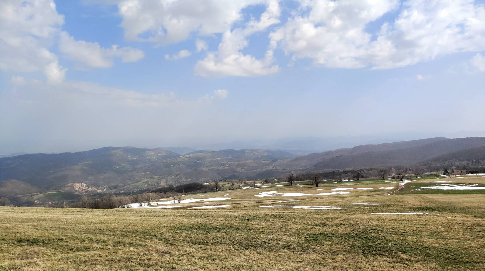

Конец марта 2020, в мире бушует ковидло, в Сербии локдаун. Из европ на родину возвращаются местные гастарбайтеры. Италия лежит костьми. У нас тоже жутковато, количество заболевших растёт. В стране всё закрыто, кажется, после двух часов дня (сейчас точно не помню, уже год прошёл с момента описываемых событий). Комендантский час. По дорогам время от времени катаются полицейские и штрафуют нарушителей. А в горы-то хочется: людей там нет, социальная дистанция соблюдается, вреда никому не причиним…
Решаем вырваться в самые близлежащие холмики, благо прямо от дома идёт автобан на юг: долетим до нужной точки за полчаса. Холмики называются «predeo izuzetnih prirodnih odlika Rajac», что в приблизительном переводе означает «слющай, дорогой, тут просто офигеть как красиво, горы-шморы, природа-шмирода, рай да и только». Ок.
Холмики действительно довольно симпатичные. Пологие и удобные для дельтапланеристов. Собственно, они их и облюбовали как стартовую точку: вон и колдун на сарайчик установили.
С погодой повезло. Чтобы облака вот так вот живописно сочетались с холмами — я давно не видел. Жаль, что снимал, как всегда, на тапок, но ради пары кадров таскать с собой что-то тяжёлое и потом обрабатывать равы ещё — не-а, не моё.

А вот это вот чёрненькое на снегу — к сожалению, сажа. Машин здесь нет, копоти от них тоже: до ближайшего города 10 километров. Просто местные топят самым дешёвым углём, автомобильными шинами, даже ДСП сжигают в печках — и вот результат. Чистый воздух в деревне зимой, прозрачный, чтоб аж звенел? Не-а, это не про Сербию.
Где-то там, за холмами, лежит деревня с прекрасным названием «Ба». А картинки сильно напоминают одну очень известную операционную систему 2001 года выпуска.
Насекомая версия моего любимого мемасика про кота, который откалибровался и сосёт кеглю: калибрующийся муравей.
Где-то на этой дорожке, запрокинув голову, мы смотрели, как в вышине зависают жаворонки (Alauda arvensis). И поют! Оглушительно громко, витиевато зовут самок: эй, сволочи, весна пришла!.. Вот уж что меня радует в этой стране, так это то, что здесь удаётся наслаждаться каким-то нечеловеческим разнообразием природы, всякими живыми тварями. Этого не хватало в Питере.
Напоследок изучили памятник косе (!) и отправились восвояси: час дня, должны успеть домой, в Мислоджин. И успели.